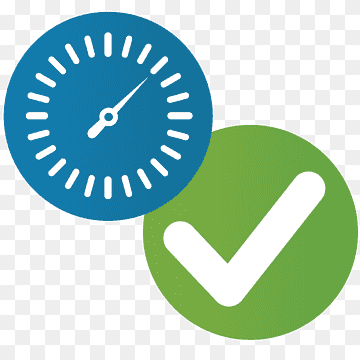

Rewarding Whistleblowers
Flip.com Rewards Whistleblowers with Cryptocurrency. Whistleblowers get paid when visitors and other users pay to download media contents of his report. Payment is direct and Immediate.Whistleblowers recieve payment as many times as people download their credible media evidences! Payment is safe and secured!Safe and Anonymity
The Safety of Whistleblowers is our Priority! We do not collect personal biodata of our Users nor their location. Flip.com provides visiblity to corrupt practices by spotlighting corrupt officials while keeping the whistleblower anonymous and safe. The Identity of all users (Whistleblowers/Vetters) on the platform are unknown and safe.
